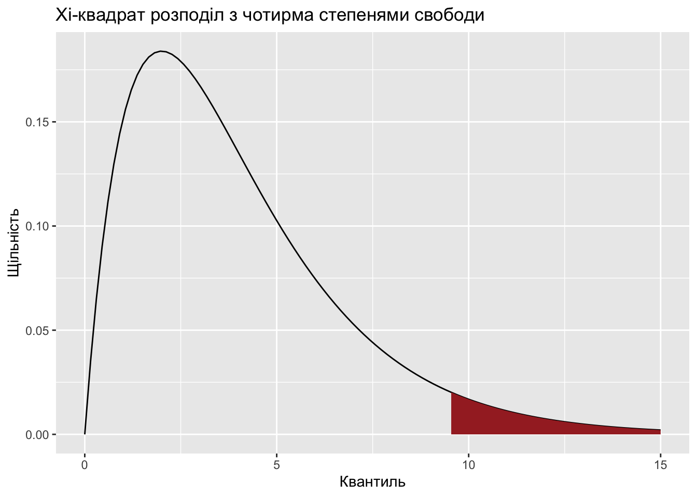

1 Знайомство з R
R — це програмно-статистичне середовище з інтерфейсом командного рядка та відкритим вихідним кодом. Все необхідне програмне забезпечення для встановлення R для різних операційних систем є на кількох сайтах, базовим є офіційний сайт http://www.r-project.org/. Як записано на офіційному сайті, R – це мова програмування та середовище для статистичної обробки даних та роботи з графікою (R is a language and environment for statistical computing and graphics).
R застосовується скрізь, де потрібна робота з даними, та дозволяє провести як базову попередню обробку даних (графіки, базові характеристики, таблиці спряженості), так і будувати різноманітні складні моделі, проводити їх аналіз за допомогою величезного спектру класичних та найсучасніших методів аналізу даних. Фактично для всіх галузей науки та для всіх добре відомих (та не дуже відомих) статистичних методик в R є функції та пакети розширень, які їх підтримують.
Головні переваги R:
Ця програма є безкоштовною разом з усіма пакетами та додатками.
Вона доволі просто встановлюється під різні операційні системи.
Під цю програму написано (і перманентно додаються) дуже багато пакетів для розв’язування широкого кола задач практично для усіх галузей, де так чи інакше використовується статистика.
Програма дуже гнучка: дані не мають жорсткої структури, результати роботи функцій можна варіювати за допомогою введення додаткових значень параметрів, можна писати власні функції.
Є зручна система допомоги та підказок. Велика кількість літератури у вільному доступі.
Чудові графічні можливості.
На офіційній сторінці ми бачимо багато інших посилань, серед яких ті, які дозволяють завантажити R для різних операційних систем та велика кількість документації. Для завантаження треба переходити за відповідними посиланнями та слідувати інструкціям.
Розроблено кілька оболонок, які мають за мету зробити роботу в R зручнішою. Вони також безкоштовні та можуть бути встановлені після того, як завантажено R. Найбільш популярними є
RStudio: www.rstudio.com
RCommander: www.rcommander.com/
Cеред переваг, наприклад, RStudio, варто вказати виведення на екран одночасно кількох вікон з командним рядком та результатами роботи, зручно організоване меню, процеси збереження історії, завантаження нових бібліотек з інтернету. Зручно також те, що RStudio виводить підказки під час набору команд на консолі.
Варто звернути увагу на посилання CRAN – Comprehensive R Archive Network – «CRAN is a network of ftp and web servers around the world that store identical, up-to-date, versions of code and documentation for R» https://cran.r-project.org/ – стабільна база пакетів для R та численні доповнення.
Зауважимо, що R тримає всі свої розрахунки в оперативній пам’яті, тому, якщо в процесі роботи, наприклад, вимкнеться живлення, то результати сесії, які не були належним чином збережені в файл, зникнуть. Ця особливість, на жаль, не дозволяє також працювати R з дуже великими розмірами (порядку сотень тисяч та більше) даних, які можливо обробляти з використанням системі аналізу ROOT https://root.cern.ch/.
Одна з корисних особливостей – історія команд: її можна переглядати, редагувати та зберігати у файлі .Rhistory. Проте головна особливість збереження середовища робочих проектів полягає в тому, що всі дані зберігаються в бінарній формі в файлі .RData. Варто регулярно використовувати команду rm() (remove()), щоб збережене середовище даних не розросталося необмежено.
Наразі є дуже багато різноманітних підручників, блогів, присвячених роботі з R. Перш за все для початку корисними будуть підручники (Майборода 2018), (Гнатюк 2010), (Зарядов 2010), блог (Мастицкий, n.d.), але можете, наприклад, подивитися (A. Vries 2012), (Dalgaard 2008), або будь-які інші посібники, вибравши, наприклад, звідси: https://cran.r-project.org/doc/contrib/ . Для кожного розділу аналізу даних будемо додатково давати посилання на ту літературу, яка, на наш погляд, повно та зрозуміло дає необхідну інформацію.
1.1 Початок роботи
Для уникнення безладу в файлах, варто починати роботу зі створення нового проекту (в RStudio відповідна кнопка знаходиться в правому верхньому кутку).
Програми, які складаються з команд R та які потім завантажуються в R та інтерпретуються ним називаються скриптами. Вони мають розширення .r. Варто створювати скрипти, навіть для таких задач, які здаються простими – це в майбутньому може зберегти час. В базовій оболонці можна відкрити вікно редактора для створення нового скрипту або завантажити вже існуючий скрипт, використовуючи пункти головного меню File - New script або File – Open script відповідно. Виконати завантажений у вікні редактора скрипт можна повністю (Edit – Run all) або виділену частину (Run line or selection). Закінчивши роботу зі скриптом, можна історію команд зберегти, використовуючи File – Save History (з розширенням .Rhistory, який можна редагувати в будь-якому текстовому редакторі). Створити історію команд можна також за допомогою спеціальних команд.
Перед тим, як завантажити дані, збережені в одному з файлів .RData, варто очистити робочу область (видалити всі завантажені змінні) за допомогою команди rm(list = ls()). Ця команда видалить всі завантажені об’єкти.
Головна робота, проте, іде в консолі. Знак > на початку командного рядка – це запрошення до роботи, він з’являється після кожної виконаної операції.
З історією введених команд R працює традиційно: попередні команди можна викликати натисканням клавіші-стрілки вгору, а пошук в історії команд – комбінацією ^r.
R ігнорує рядки, що починаються з # – вони можуть бути використані для коментарів в коді.
На присвоєння назв об’єктам в R є певні обмеження:
назви об’єктів можуть містити цифри, але не можуть з них починатися;
в назвах об’єктів не можна використовувати спеціальні символи;
крапка та нижнє підкреслювання можуть використовуватись, причому назва об’єкту навіть може починатися з крапки.
Довгу команду доцільно розбити на кілька рядків, причому при переході на наступний рядок автоматично виводиться символ продовження +. R сам визначає за синтаксисом, що команда не завершена. Тому певні синтаксичні помилки (наприклад, загублені дужки) можуть сприйматися як незакінчені команди. В цьому випадку R виставить + на початку наступного рядка та перейде в режим очікування. Щоб перейти в режим введення нової команди без завершення попередньої, треба натиснути esc.
Багато команд приводять до появи вікон, що вспливають, з графіками, малюнками або діаграмами даних. Деталі вікон залежать від платформи та налаштувань. Графіки можна перенаправляти для збереження в зовнішніх файлах для подальшого використання.
Присвоювання значення виконується за допомогою знаків <- (присвоювання ліворуч), -> (присвоювання праворуч) або також знака = в операціях високого рівня (не у вкладених виразах). Якщо є сумніви щодо використання знака рівності, безпечніше використовувати стрілку.
Для того, щоб вийти з програми, достатньо ввести команду виходу та відповісти на запитання:
або
та відповісти на запитання:
Save workspace image? [y/n/c]: n
Тут вже видно, що в R будь-яка команда є функцією, у якої є аргументи, які можна або треба задавати, в багатьох випадках аргументи мають певне значення за замовчуванням. Проте, навіть якщо аргумент не вказується, дужки все одно потрібні.
Проте вийти з R можна, не відповідаючи на питання, що з’являється, якщо задати відповідний аргумент (зверніть увагу на лапки: їх треба обов’язково використовувати в цій команді, як і в багатьох інших, а деякі команди без лапок просто не працюють):
Що означає це питання та ця відповідь? Якщо дати ствердну відповідь, в робочу папку R (ту, з якої він викликаний) запишуться два файли: бінарний .Rdata та текстовий .Rhistory. Перший містить всі об’єкти, створені за час сесії, другий – повну історію введених команд. Якщо навмисне чи випадково при виході зберегти ці файли, то при наступному старті вони завантажаться автоматично. Інколи це потрібно, інколи заважає. Отже, пильнуйте.
1.1.1 Довідка
Для того, щоб узнати деталі використання тої чи іншої функції (або певного датасету), треба скористатися довідкою. Для цього є дві основні команди (в дужках – назва функції, інформація щодо якої потрібна):
або
Це дуже корисна функція, варто звикнути користуватися нею регулярно.
Окрім вказаних команд, є інші, які дозволяють отримати певну довідку:
+ help.start() – загальна довідкова система R;
apropos("object")повертає перелік всіх функцій, які містять рядокobject;example(function)повертає приклад використання функціїfunction;help.search("object")– пошук за вказаним словом в довідковій системі R;??object– те саме, щоhelp.search("object");RSiteSearch("function")– пошук інформації про функціюfunctionв допоміжній літературі та архіві
Якщо точна назва функції невідома, використовуються функції help.search(), ??keyword, RSiteSearch().
1.1.2 Арифметичні дії
Звичайно, R можна використовувати і в якості калькулятора. Арифметичні процедури вводяться традиційно (+, -, *, / – головні арифметичні дії, ^ та ** – піднесення в степінь, %% повертає залишок від ділення), порядок арифметичних дій та використання дужок – теж:
Основні логарифмічні та експоненційні функції:
exp(x)– обчислення \(e^x\);log(x, base= )таlogb(x, base= )– обчислення лгарифма за основою, вказаною аргументомbase(за замовчуванням цей аргумент рівний \(e\));log10(x), log2(x)` логарифми відповідно за основою 10 та 2.
Зверніть увагу на те, що перед числовою відповіддю стоїть одиниця в квадратних дужках. Вона означає номер елементу вектора, оскільки R результат будь-якої операції з числами трактує як вектор одиничної довжини, елементи вектора нумеруються з одиниці. Скалярних величин, власне, в R немає.
Якщо результатом виконання є вектор, значення якого виписані в кілька рядків, то кожен наступний рядок буде починатися з порядкового номеру відповідного елемента вектора, взятого у квадратні дужки.
1.1.3 Порівняння величин
R має операції порівняння, які повертають логічну змінну, що каже про справедливість трердження. Окрім традиційних більше-менше, використовуються такі логічні оператори:
– “рівне” ==
– “не рівне” !=
– “менше або рівне” <=
– “більше або рівне” >=
– “логічне І” &
– “логічне АБО” |
– “логічне НЕ” !
Результат порівняння можна зберігати (як скалярну величину, вектор, матрицю, тощо, залежно від того,що порівнюється)
1.1.4 Пакети в R
Ще одна перевага R – наявність для нього численних розширень та пакетів буквально на всі випадки, хоча навіть базовий R має дуже великий набір пакетів для реалізації математичних, графічних та статистичних процедур (базові пакети, без яких R просто не працює, наприклад, пакет, який так і називається base, або пакет grDevices, який керує виведенням графіків, та «рекомендовані» пакети, як то пакет для спеціалізованого кластерного аналізу cluster, пакет для аналізу нелінійних моделей nlme, тощо). Пакет – це комплект наборів даних або способів (функцій) певної методики обробки даних – файли зі скриптами та їх описом. Кожен пакет повинен мати також help-документацію. Індивідуальні користувачі та організації постійно розробляють додаткові функції та формують з них пакети після достатнього опрацювання. Це великою мірою розширяє функціональність R.
Оскільки пакети створюються різними розробниками, незалежно один від одного, між ними можуть існувати неузгодженості. Зокрема в різних пакетах часто трапляються однакові функції з різними іменами та параметрами. Для правильного використання функцій при наявності дублюючих рекомендується завантажувати для роботи не всі інстальовані на комп’ютер пакети, а лише ті, які потрібні для роботи в даний момент.
На CRAN є в доступі тисячі пакетів, будь-який з них можна завантажити. В R-studio це робиться через Packages-Install (в базовому R це можна зробити подібним чином). Після скачування вихідників пакету перед використанням часом його треба спочатку зкомпілювати, тому що багато пакетів містять код на Fortran чи С. Прямо під час сесії роботи інсталювати пакет можна командою install.packeges().
Щойно пакет встановлено, він готовий до роботи. його треба тільки ініціалізувати перед використанням (завантажити в робочу область пам’яті). Для цього є команда library(). Варто зауважити, що поняття «бібліотека» відрізняється від поняття «пакет»: під бібліотекою розуміють каталог, в якому знаходиться пакет. Проте для більшості користувачів ця різниця не є суттєвою.
Перелік доступних на CRAN пакетів за відповідним напрямом аналізу даних (та деяких інших напрямів) можна знайти за посиланням https://cran.r-project.org/web/views/. Наприклад, перелік пакетів, пов’язаних з викладенням статистики є за посиланням https://cran.r-project.org/web/views/TeachingStatistics.html. Зауважимо, що ми переважно будемо працювати з даними, які вже завантажені в пакетах R. Детально про те, як імпортувати дані в R, можна подивитися за посиланням https://r-analytics.blogspot.com/2011/07/r_24.html.
Приклад 1.
Для завантаження пакету faraway ( )
Інсталюйте пакет використовуючи або меню Packages-Install package(s) GUI-меню (В цьому випадку перед інсталяцією треба вибрати «дзеркало CRAN» – географічно близький інтернет-архів, з якого робиться інсталяція. Варіант 0-cloud, що пропонується за замовчуванням, цілком підходить), або аналогічні пункти меню RStudio, RCommander, тощо. Коли відкриється вікно з назвою Packages, прокрутіть перелік пакетів, оберіть faraway та двічі клікніть (або натисніть ОК), щоб його інсталювати. Цей пакет дає нам доступ до багатьох наборів даних, з якими ми також будемо працювати. Є інші шляхи інсталяції пакетів, але вказаний, мабуть, найпростіший для початку.
В R GUI, в оболонках, головне вікно – це консоль (R Console). Набравши тут
ls()(функція, яка видає перелік об’єктів у роботі) можна побачити, що наразі немає датасетів, доступних в робочому просторі. Щоб переконатись, що дані пакету Faraway стали доступними, наберіть
Тепер можна побачити, які саме датасети знаходяться в цьому пакеті. Очевидно, що в інших пакетах є інші набори даних. Щоб побачити, які датасети є в базовій поставці R, наберіть data(). В RStudio в Packages є перелік наявних пакетів. Якщо тут клікнути на назву пакета, висвітиться його вміст.
- Просто зараз переглянемо датасет, отриманий при проведенні експерименту, в якому тварин тримали на різних дієтах. Через деякий час, коли наслідки дотримання дієти теоретично могли мати місце, був виміряний час згортання крові піддослідних тварин. Ці дані взяті з книги Statistics for Experimenters: An Introduction to Design, Data Analysis, and Model Building (Box, Hunter, & Hunter, 1978). Для того, щоб завантажити ці дані, в консолі наберіть
Відповіді ви не побачите ніякої, але якщо тепер знову набрати ls(), ви побачите, що датасет coagulation готовий до роботи. Щоб переглянути самі дані, введіть
Ви побачите 24 рядки даних у вашій консолі (ми виводимо лише перші з них):
coag diet
1 62 A
2 60 A
3 63 A
4 59 A
5 63 B
6 67 BВ перший стовпчик внесено номер піддослідної тварини, в другий – час згортання крові в секундах у відповідної тварини (змінна під назвою coag), в третьому – тип дієти, на якій ця тварина утримувалась (змінна diet).
В R подібні дані зберігаються як фрейм даних. Щодо типів даних ми говоритимемо пізніше. Зараз важливо зрозуміти, що багато датасетів організовані таким чином, що над різними індивідами (випадками) проводяться спосереження, причому кожен індивідуум має кілька різних змінних – аспектів (параметрів, характеристик), які вимірюються за допомогою чисел або ж шляхом віднесення до певної категорії. В даному датасеті перша тварина утримувалась на дієті А та мала час згортання крові 62 с.
Фрейми дуже зручні для обробки даних. Зокрема, R, залежно від типу даних, поводить себе відповідним чином. Наприклад, щоб зобразити для даного датасету «ящик з вусами», п’ятиточкову характеристику вибірки, достатньо ввести в консоль
В подальшому ми побачимо, що функція plot() для інших типів даних будуватиме іншу діаграму. Тут зараз ми бачимо залежність величини часу згортання від типу дієти (coag~diet). Оскільки тип дієти – це номінальна змінна (див. теоретичний матеріал), то R будує діаграму, яка найкраще зображує залежність чисельного показника від номінальної змінної (групи) – «ящик з вусами».
Зауважте, що в команді вказано, з якого датасету беруться дані (data=coagulation). Лише в цьому разі змінні coag та diet будуть доступні, без цього аргументу R видасть помилку. Це важливо особливо тоді, коли ви працюєте одночасно з кількома датасетами.
Дивлячись на цю діаграму, виникає природне питання, чи впливає тип дієти на час згортання крові. Відповідь на це питання можна отримати за допомогою методики дисперсійного аналізу, який ми розглядатимемо пізніше (5).
Якщо ви маєте бажання продивитися значення кожної змінної окремо, ви можете використати знак $, щоб виокремити певну змінну:
Вправа.
- Завантажте датасет за допомогою команди
Опис датасетів, зібраних в пакеті Faraway можна подивитися за посиланням:
http://cran.r-project.org/web/packages/faraway/faraway.pdf
- Побудуйте ящик з вусами для часу виживання залежно від отрути та часу виживання залежно від догляду (
plot(time~treat,data=rats)).
1.1.5 Функції в R
R – мова функціонального програмування. Функції здійснюють операції над об’єктом та повертають результат, при цьому сам об’єкт не змінюється. Вбудовані функції – це ті, які є складовою частиною програмного середовища R.
Будь-яка операція в R – це функція:
В R є дуже багато вбудованих функцій, в рамках цього посібника ми не описуватимемо абсолютну їх більшість. Проте згадуватимемо частину з них як корисні для статистичного аналізу в рамках наших потреб.
Перелік найкорисніших функцій та їх головних аргументів, які варто було б запам’ятати чи, принаймні, знати про їх існування, можна знайти в “шпаргалці” на сайті CRAN
Як було вказано вище, функції в R мають аргументи, часто дуже багато, хоча найбільш вживаними є, зазвичай, невелика їх кількість. Система аргументів працює розумно, є значення аргументів за замовчуванням (by default). Деякі аргументи мають імена, а отже аргументи можна викликати не по номерах, а за іменами.
Приклад 2.
Продемонструємо, як можна за допомогою значень аргументів змінити зображення на прикладі простої команди hist() для побудови гістограми базового пакету stats. Головним і єдиним необхідним (без якого функція не працює) аргументом є data – датасет, для якого має бути побудована гістограма. Насправді ця функція має багато інших аргументів, про які можна дізнатися, викликавши довідку по цій функції. Проте ці аргументи мають значення за замовчуванням (by default), і, в принципі, гістограма так чи інакше буде зображена для вказаного датасету.
Візьмемо датасет Loblolly в базовому R – 84 виміри висоти дерева ладанної сосни (Loblolly pine tree). Зобразимо для цих даних гістограму, не вказуючи додаткових параметрів:

Матимемо сіру гістограму з підписами, які повторюють назву змінної в датасеті та абсолютними частотами спостережень, зображеними по вісі ординат. Все це можна змінити. Наприклад, так:
hist(Loblolly$height, xlab='Висота ладанної сосни', ylab='Відносна частота', main='Гістограма висот ладанної сосни', freq=F, col='green', breaks=15)Чи стала гістограма виглядати краще – це питання смаку, проте різниця очевидна. Зауважимо, що у функції hist() є ще інші параметри, які можна було б задати для вдосконалення зображення, проте поки що цього робити не будемо. Більш детально про сенс параметрів цієї функції буде сказано у розділі (2)
1.1.6 Умовний оператор та цикли
Оператори керування – цикли та умовні оператори, насправді, використовуються в R рідко, перш за все завдяки тому, що багато операцій векторизовано та можна використовувати логічні змінні для вибору певних елементів. Проте за деяких ситуацій вони все ж необхідні. Структура їх абсолютно аналогічна подібним структурам в інших мовах програмування.
Група функцій, на яку варто звернути увагу, і яка зокрема дає можливість організовувати певне керування даними – це сімейство функцій apply.
В цьому посібнику ми не наводимо ні операторів керування, ані опису apply-функцій, інформацію про них можна знайти в будь-якій літературі по R.
1.1.7 Написання власних функцій
В R неважко створити власну функцію. Загальна форма функції, що створюється new_function_name<-function(аргументи){вираз}. Тут
new_function_name– ім’я функції, що створюється; -function– ключове слово, яке повідомляє R про те, що буде створена функція;- аргументи функції – перелік формальних аргументів функції, розділених комою, від яких залежить вираз. Аргументом може бути символ(ім’я змінної), вираз типу символ=вираз (наприклад,
x=TRUE)`, інша функція, спеціальний формальний аргумент – трикрапка(…, означає, що потім функції буде передано довільну кількість аргументів). Деяким аргументам іноді присвоюють значення за замовчуванням. - вираз (тіло функції) є командою або блоком команд, що залежать зазвичай від визначених раніше аргументів функції. Окремі команди пишуться з нового рядка або через крапку з комою (;).
В якості значення функція повертає останнього виразу в фігурних дужках.
Виклик функції має вид new_function_name(аргументи). Можливі різні варіанти перерахунку аргументів залежно від ситуації.
Якщо функція викликається з іншого скриптового файлу, треба вказати ім’я файла, де знаходиться ця функція, за допомогою команди source("file_name.R").
Можна використати повну форму запису для створення функції:
new_function_name<-function(аргументи){вираз return(значення) }
1.2 Типи даних в R
Кожна змінна належить до певного типу даних. В R є такі типи даних в порядку зростання приорітету:
Логічні (
logical) – TRUE, FALSE, обов’язково пишуться великими літерами;Дійсні числа (
numeric), які поділяються на цілі (integer) та власне дійсні (doubleабоreal) числа;Комлексні числа (
complex);Текстові (символьні) (
character), використовуються в лапках (“Helloworld”).
Визначити тип даних можна за допомогою функції class():
Об’єкт класу numeric створюється за допомогою команди numeric(n), де n – кількість елементів даного типу. Створюється нульовий вектор довжини n. Об’єкти типів integer та double створюються відповідно за допомогою функцій integer(n) та double(n). Десятинна частина відділяється за допомогою крапки.
Об’єкт класу logical створюється подібним чином за допомогою команди logical(n), але в цьому випадку створюється логічний вектор довжини n, що складається лише зі значень FALSE.
Об’єкт типу character створюється функцією character(n), результат – порожній символьний вектор довжини n.
Перетворення типів даних один в одний реалізується за допомогою групи функцій, що починаються на as. Зокрема, перевести об’єкт в логічний можна за допомогою функції as.logical(), при цьому значення, що не дорівнюють нулю, перетворюються на TRUE, а нульові значення на FALSE. Якщо переводити дані з логічного типу в один з числових, то буде лише два значення: 0, що відповідає значенню до перетворення FALSE та 1, що відповідає значенню TRUE. Символьний об’єкт можна перевести в числовий, якщо він представляє собою число в лапках. Якщо ж в лапках стояв власне символ (або набір символів), то таке перетворення приведе до появи NA (Not Available). Символьні змінні "T" та "F" (як і символьні "TRUE" і "FALSE") можна перевести в логічні TRUE FALSE.
В R існує кілька особливих об’єктів, які можна використовувати у виразах:
Inf(\(\infty\)) – нескінченність та-Inf(\(-\infty\)) – від’ємна нескінченність.NA(Not Available) – значення, яке не існує;NaN(Not a Number) – не число;NULL– “нічого”, порожній об’єкт. Обнулити об’єкт можна за допомогою командиis.null().
1.3 Структури даних в R
Основними структурами даних є вектори, матриці, масиви, фрейми та списки.
1.3.1 Вектори
Базовим об’єктом даних в R є вектор. Різні види векторів додають такі можливості, як робота з матрицями, (багатовимірними) масивами даних, (різнорідними) списками, факторами та фреймами.
Вектор – це одновимірний об’єкт, що містить елементи одного типу.
Створення векторів
Основна функція для створення векторів – c() (concatenation). В якості аргументів цієї функції перераховують значення (або інші вектори), розділені комою, які треба об’єднати у вектор. Якщо об’єднати вектори різних типів даних, то R зведе їх до одного, більш пріоритетного:
Вектор можна також створити за допомогою функції scan(), яка зчитує значення, які послідовно вводяться з клавіатури. Після кожного нового значення треба натискати клавішу Enter. Завершується виконання команди введенням порожнього рядка. Одним з недоліків цього методу є те, що якщо при вводі значень було зроблено помилку, то доведеться почати вводити дані заново.
Якщо потрібно ввести послідовність чисел, зручно використовувати функцію seq():
Для створення вектора, елементи якого повторюються, є команда rep() (repeat):
Елементи вектора можуть мати імена. Можна додати імена, створивши інший вектор:
Або
Імена вектора також можуть бути виведені:
Видалення імен здійснюється присвоєнням спеціального типу NULL:
Операції над векторами
Більшість операцій над векторами та однорідними елементами проводяться поелементно. Отже, для того, щоб зробити щось над елементами вектора даних, не потрібен цикл, оскільки можна просто виконати операцію одразу з усіма елементами вектора. Можна також оперувати лише елементами з певними індексами, використовуючи «індексний масив». Або можна оперувати тільки елементами, які мають певну властивість.
Всі арифметичні операції над кількома векторами проводяться поелементно і результатом є також вектор:
При цьому, якщо два вектори мають різну кількість елементів, то вектор меншої довжини буде повторюватися стільки разів, щоб відповідати довжині більшого вектора.
a=c(1:7)
b=c(1:10)
a+b
Warning in a + b: longer object length is not a multiple of shorter object
length
[1] 2 4 6 8 10 12 14 9 11 13Якщо довжина більшого вектора кратна довжині меншого, то попередження не виводиться.
Окрім того є ряд зручних операцій, аргументом яких є вектор, а результатом – число, підраховане певним чином. Наприклад, функція sum() повертає суму елементів вектора, функція mean() рахує середнє арифметичне елементів вектора (взагалі кажучи, всього, що знаходиться в дужках).
Для впорядкування елементів вектора за зростанням чи за спаданням, використовується функція sort() з аргументом decreasing = FALSE або decreasing = TRUE відповідно:
Склеїти символьних елементів можна функцією paste(). В найпростішому варіанті, коли елементи – символьні, повертається рядок з пробілами в якості розділювачів:
Виділення елементів вектора
Елементи вектора можуть бути виділені за допомогою індексів, які вказуються у квадратних дужках. Перший елемент має номер 1, другий – 2 і т.д. Причому індекси можна вказувати по одному, послідовністю, або з використанням функції c(), створюючи вектор потрібних індексів. Вибрані елементи відповідатимуть індексам незалежно від порядку їх використання:
Аналогічно можна видалити певні елементи вектора. поставивши знак “мінус” перед відповідними індексами:
Використовуючи індекси, можна здійснювати операції над певними елементами різних векторів.
Оскільки елементи вектора мають імена, можна також виділити частину вектора за їх іменами:
В якості критерію для вибору значень може бути логічний вираз:
Можна виділити частину вектора, використовуючи булеві змінні:
1.3.2 Матриці
Матриця (matrix) – це двовимірний набір елементів одного типу (Зауважимо, що аналогічною структурою є масив (array) – сукупність однотипних елементів розмірністю більше двох). Основна функція для створення матриць – matrix(), головними аргументами є вектор даних, який треба перетворити у матрицю, nrow – кількість рядків матриці, що утворюється, або ncol – кількість стовпчиків. Ця функція розставляє елементи зверху донизу, починаючи з першого стовпчика. Але можна змінити порядок розстановки елементів (зліва направо по рядках), зазначивши аргумент byrow= TRUE (за замовчуванням значення цього аргумента FALSE).
Якщо елементів вказаного вектора не вистачає для заповнення матриці вказаного розміру, елементи, яких не вистачає, будуть взяті з того ж вектора, при цьому виведеться відповідне попередження:
matrix(1:6, nrow=2, ncol = 5)
Warning in matrix(1:6, nrow = 2, ncol = 5): data length [6] is not a sub-
multiple or multiple of the number of columns [5]
[,1] [,2] [,3] [,4] [,5]
[1,] 1 3 5 1 3
[2,] 2 4 6 2 4Визначити розмірність матриці можна за допомогою функції dim() (dimension), яка поверне два значення: кількість рядків та кількість стовпчиків:
В якості назв рядків та стовпчиків матриці, що утворюється, автоматично виводяться відповідні індексні номери (рядки – [1,], [2,], стовпчики – [,1] [,2] [,3]). Проте рядкам та стовпчикам можна присвоїти імена за допомогою відповідно функцій rownames() та colnames():
m=matrix(c(177, 178, 175), nrow=1)
rownames(m)=c("height")
colnames(m)=c("Hanna", "Katrin", "Iryna")
m
Hanna Katrin Iryna
height 177 178 175Матрицю можна також створити, “склеївши” кілька векторів-стовпчиків або векторів-рядків за допомогою відповідно функцій cbind() та rbind(). Склеїти можна не тільки вектори, але й матриці:
m1=matrix(1:3, nrow=1)
m2=matrix(4:9, nrow=2)
rbind(m1, m2)
[,1] [,2] [,3]
[1,] 1 2 3
[2,] 4 6 8
[3,] 5 7 9Виділення елементів матриці
Елементи матриць виділяються аналогічно тому, як це робиться для векторів. Зрозуміло, що тепер в квадратних дужках треба вказати подвійний індекс – номер рядка та номер стовпчика, на перетині яких знаходиться потрібний елемент. Можна вибрати кілька елементів з послідовними номерами або дані з певних рядків чи стовпчиків:
Операції з матрицями
Арифметичні операції, як і для векторів, проводяться поелементно. Такі операції як sum() та mean() повертають суму та відповідне середнє арифметичне всіх елементів матриці
Операція транспонування здійснюється функцією t() (transpose):
Ще декілька функцій для матриць:
diag(m)повертає діагональ матриціm;%*%– оператор множення матриць;solve(a, b)знаходить розв’язокxматричного рівнянняa %*% x = b, деaіb- матриці;solve(m)повертає матрицю, обернену до матриціm;rowsum(m)таrowSums(m)рахують суми по кожному з рядків матриціmабо іншого схожого за структурою об’єкта;colsum(m),colSums(m)аналогічні попередній функції, але рахують суми по стовпчиках;rowMeans(m)рахує середні значення по рядках матриціm;colMeans(m)рахує середні значення по стовпчиках матриціm.
1.3.3 Категоризовані дані. Фактори
В R фактори (factor) зберігають дані, які приймають значення зі скінченної кількості категорій (група крові, стать, належність до вікової групи), та представляють номінальну чи рангову шкалу.
Рівні фактора (levels) – це можливі категорії, і вони виводяться разом з даними в алфавітному порядку. Коли фактори створюються за допомогою функції factor(), R автоматично виділяє рівні. Рівні фактору можна побачити за допомогою функції levels(). За бажанням їх можна перейменувати, при цьому спосіб виведення даних також змінюється.
v=c("woman", "woman", "man")
f=factor(v)
levels(f)
[1] "man" "woman"
levels(f)=c("m", "w")
levels(f)
[1] "m" "w"
f
[1] w w m
Levels: m wГрупування категоризованих даних
Збереження даних у фактори дозволяє робити корисні речі. Наприклад, побачити абсолютні частоти спостережень кожної категорії (рівня), використовуючи функцію summary():
Якщо застосувати цю функцію безпосередньо до вектора з текстовими змінними, матимемо:
Можна виділити фактор квадратними дужками, як у векторах. При цьому все одно виводяться всі рівні фактора:
Знаки порівняння можуть порівнювати текстові величини за алфавітом. Проте неможна порівнювати фактори без визначеного порядку. Ординальні змінні (яким властивий порядок) можуть бути представлені в R як впорядковані (ordered) фактори за використання у функції factor() аргументу ordered=TRUE. Текстові змінні автоматично впорядковуються за алфавітом.
h=c("small", "small", "large", "huge")
factor(h, ordered = TRUE)
[1] small small large huge
Levels: huge < large < smallДля того, щоб вказати правильний порядок, треба окрім аргументу ordered=TRUE додати аргумент levels функції factor() з вказаними рівнями в потрібному порядку. В цьому випадку буде введено порядок рівнів, заданий аргументом levels:
h=c("small", "small", "large", "huge")
factor(h, levels = c("small", "large", "huge"), ordered = TRUE)
[1] small small large huge
Levels: small < large < hugeТепер фактори можна порівнювати:
1.3.4 Фрейми (таблиці) даних
Фрейми даних (data frame) – це, як і матриця, двомірний набір даних (таблиця), проте, на відміну від матриць, стовпчики у фреймах можуть містити дані різного типу. Тип даних всередині кожного стовпчика є сталим. Створити фрейм можна з кількох заданих векторів (які будуть стовпчиками таблиці) за допомогою функції data.frame():
sex=c("man", "woman", "man")
age=c(56, 45, 29)
desease<-c(TRUE, FALSE, FALSE)
d<-data.frame(sex, age, desease)
d
sex age desease
1 man 56 TRUE
2 woman 45 FALSE
3 man 29 FALSEЛівий стовпчик з номерами не є стовпчиком фрейма, в ньому – номери (мітки) рядків (спостережень). Якщо даних дуже багато, функції head() та tail() дають можливість продивитися кілька перших чи відповідно останніх рядків.
Ще одна корисна функція – str(), яка повертає структуру вказаного датасету (не лише для фреймів):
str(d)
'data.frame': 3 obs. of 3 variables:
$ sex : chr "man" "woman" "man"
$ age : num 56 45 29
$ desease: logi TRUE FALSE FALSEВиділення елементів фрейма
В останньому прикладі, зокрема, видно, що кожен стовпчик має назву, за якою до нього можна звернутися. Тобто, окрім традиційного для векторів та матриць виділення елемента за числовим індексом у квадратних дужках (як і для матриць, можна вказати по одному числу для номера рядка та стовпчика, можна вибрати кілька стовпчиків чи рядків), можна звернутися до стовпчика фрейма, вказавши його назву зі знаком $:
d$age
[1] 56 45 29
d$age[2]
[1] 45
d[2, 1]
[1] "woman"
d[2:3, 1:2]
sex age
2 woman 45
3 man 29
d[ ,3]
[1] TRUE FALSE FALSEЗверніть увагу, що якщо виділити стовпчик фрейма, то результатом цієї операції буде вектор. Якщо треба, щоб результат операції був також фреймом, треба додати при виборі додатковий аргумент drop=FALSE:
Рядкам також можна присвоїти імена та звертатися до них за іменами:
d<-data.frame(sex, age, desease, row.names = c("case1", "case2", "case3"))
d["case1", ]
sex age desease
case1 man 56 TRUEВід’ємні індекси, як і раніше, використовуються для видалення відповідних стовпчиків та рядків.
Ще один корисний спосіб виділити рядки – використання булевого вектора. Такий вектор вказує, які рядки фрейма треба залишити (відповідні елементам вектора зі значенням TRUE), а які – викинути (FALSE).
Для виділення рядків, що задовольняють кільком умовам, можна використати більш ніж одну логічну операцію:
Функція subset() також повертає підмножину фрейма даних, зокрема згідно відповідному булевому вектору, який фіксує виконання бажаної умови та створюється аналогічно попередньому випадку, або безпосередньо вказуючи умову (або умови) в аргументах функції subset(), яка поверне ті рядки фрейма, для яких вказана умова виконується:
Зміна порядку в даних
Функція order() повертає індекси тих елементів вектора, які треба було б поставити на відповідне місце при побудові варіаційного ряду з вихідного вектора:
В даному випадку для побудови варіаційного ряду (елементи вибірки розташовані в порядку неспадання) з вектора b, треба на перше місце поставити елемент b[2] (тобто 2), на друге місце – b[4] (2), далі – b[3] (3) і т.д. Отже, варіаційним рядом буде вектор (b[2], b[4], b[3], b[1], b[5], b[6]).
Для фрейма відповідно можна використати цю функцію для одного зі стовпчиків:
– тобто наймолодшою є особа під номером 3, другою за віком є особа 2, найстаршою – особа 1.
Для того, щоб змінити порядок даних при виводі фрейма, базуючись на порядку певного стовпчика, також можна використати функцію order(). В цьому випадку дані розміщуватимуться в порядку зростання вказаної величини (стовпчика), номери рядків при цьому залишатимуться прикріпленими до первісних номерів спостережень (рядків):
Зверніть увагу на те, що аргумент order() стоїть перед комою. Це – правильний шлях розсортувати рядки фрейму d за зростанням значень стовпчика d$age.
1.3.5 Списки
Списки (lists) містять впорядкований набір елементів, кожен з яких може бути вектором, матрицею, масивом, фреймом, списком. Для створення списку використовується функція list():
Імена елементам списку можна присвоювати одразу при його створенні:
list(element.1=1:3, element.2=matrix(1:6, nrow=2))
$element.1
[1] 1 2 3
$element.2
[,1] [,2] [,3]
[1,] 1 3 5
[2,] 2 4 6Або використовуючи функцію names():
l=list(1:3, matrix(1:6, nrow=2))
names(l)=c("el.1", "el.2")
l
$el.1
[1] 1 2 3
$el.2
[,1] [,2] [,3]
[1,] 1 3 5
[2,] 2 4 6Отже, списки можуть містити багато різних елементів, кожен з яких має номер (який записується в подвійних квадратних дужках: [[1]], якщо виділити елемент в звичайних одинарних квадратних дужках, то результатом буде список (по структурі), який містить один елемент), або ім’я ($el.1), за якими можна викликати потрібний елемент списку. Можна поєднувати перераховані вище способи виклику елемента.
l[[1]]
[1] 1 2 3
class(l[[1]])
[1] "integer"
l[1]
$el.1
[1] 1 2 3
class(l[1])
[1] "list"
l$el.2
[,1] [,2] [,3]
[1,] 1 3 5
[2,] 2 4 6
l$el.2[1,2]
[1] 3
l[[2]][2, 3]
[1] 6
l[["el.1"]][1]
[1] 1
l[[2]][l[[2]]>=3]
[1] 3 4 5 6Функція str() демонструє структуру списку:
1.4 Елементи графіки в R
Графічні можливості R – це його велика перевага. І роль різноманітних графіків в аналізі даних важко переоцінити. В базовому R кілька пакетів відповідають за графіку. Окрім того є додаткові пакети з розширеними графічними можливостями. Ми будемо переважно спиратися на базову графіку пакету graphics та часом на графічні можливості додаткового пакету ggplot2, в якому є деякі додаткові можливості, дещо інакше зображення та дещо інша логіка виклику додаткових опцій. В подальшому викладенні частину прикладів будемо наводити з використанням базової графіки, деякі – з використанням ggplot2.
Ще раз наголосимо, що графічних можливостей насправді дуже багато, і ми наведемо лише поверхневий огляд головних функцій, які нам будуть потрібні для подальшої роботи. Більш глибоко щодо графіки в R можна прочитати, наприклад, в (Майборода 2018), (Murrell 2006), (Wickham 2016), або в одному з подібних видань.
1.4.1 Пакет graphics
Що можна зобразити за допомогою функцій цього пакету? Перш за все, широкий спектр стандартних графіків та зображень, зокрема:
- лінійний граф:
plot() - гістограму
hist() - стовпчикову діаграму
barchart() - ящик з вусами
boxplot() - 3D-графік
persp() - секторну діаграму
pie() - тощо.
Неможливо описати всі можливості побудови графіків навіть засобами базового пакету, зважаючи на різноманіття параметрів кожної функції. Наведемо деякі загальні принципи. В базовому пакеті graphics можна виділити три групи функцій:
- функції високого рівня – приводять до створення графічного вікна, в якому будується задане зображення;
- функції низького рівня – дозволяють доповнити вже побудоване раніше зображення (часто дублюючи аргументи функцій високого рівня), але самі вони не можуть створити графічне вікно;
- інтерактивні функції – дозволяють за побудованим зображенням отримати певну інформацію.
Керування графічними вікнами
Коли в R задається графічна функція, відкривається графічне вікно з відповідним графіком.
Функція split.screen() ділить активне графічне вікно. Наприклад, split.screen(c(1,2)) ділить вікно на дві частини, які можуть бути викликані командами screen(1) та screen(2).
Функція layout() дозволяє розділити активне графічне вікно на кілька частин, де графіки будуть зображені послідовно. Наприклад,
створить шість підвікон, які будуть розташовані в три рядки та два стовпчика (заповнюється графіками по стовпчиках).
Підвікна можуть мати різні розміри. Наприклад, команда
буде ділити загальне вікно на 6 частин (3 рядки та 2 стовпчика), але при цьому графік з номером 5 буде займати два вікна: п’яте і шосте. Щоб подивитись на розділення, створене за допомогою команди layout(), можна використати функцію layout.show(5)
аргумент цієї функції – кількість вікон, розміщення яких є бажання переглянути.
Створити матрицю розміщення графічних підвікон можна в будь-який інший спосіб:
library(carData)
Warning: package 'carData' was built under R version 4.0.2
layout(rbind(c(1,1), c(2,3)))
plot(income ~ type, data=Duncan)
hist(Duncan$income, col="yellow")
plot(prestige ~ income, col="red", data=Duncan)Нове графічне вікно можна також відкрити за допомогою функції x11().
Інша функція, яка задає постійні графічні параметри та може покращити представлення графіка (несумісна з попередньою), – це функція par().
par() визначає глобальні параметри графічного вікна, згідно яким будуватимуться всі подальші графіки до наступного використання даної функції або виходу з R. Це звільняє команди, такі як ggplot(), plot(), від необхідності зберігати цю інформацію самостійно.
Наприклад, команда
виводитиме всі подальші графіки на фоні кольору слонової кістки.
Перед зміною графічних параметрів за допомогою par() може бути корисним зберегти попередні параметри, щоб до них можна було повернутися:
opar <- par() # збереження поточних установок
par(col.main="darkblue", col.lab="blue", bg="ivory") # активація нових параметрів
hist(Duncan$income) # створення графіку з новими графічними установкамиОскільки графічних параметрів багато, то і функція par() має дуже багато аргументів. Повний перелік аргументів та їх значення можна подивитися в довідці, поточні установки виведуться викликом функції par() без аргументів. Наведемо деякі з них.
adj– керує вирівнюванням тексту (0 – по лівому краю, 0.5 – центрований, 1 – по правому краю);bg(background) – визначає колір фону;cex– значення регулює розмір текстів та символів відносно значення за замовчуванням (cex=0.7 зробить мітки меншими);col.– група аргументів, що задає колір символів:col.axis,col.lab,col.title,col.sub;font.– група аргументів, що задає фонт символів:font.axis,font.lab,font.title,font.sub; можливі значення: 0 – звичайний, 1 – курсив, 2 – напівжирний, 3 – напівжирний курсив;las– вказує орієнтацією надписів по осях (0 – паралельно осям, 1 – 1 – горизонтально, 2 – перпендикулярно осям, 3 – вертикально);lty– задає тип ліній (1 – суцільна, 2 – штрихована, 3 – пунктирна, 4 – штрих-пунктирна, 5 - longdash, 6 – подвійне підкреслення. Може бути рядком до восьми символів (між “0” та “9”), який альтернативно визначає довжину в точках чи пікселях, відображаючи елементи та пробіли;lwd– задає товщину ліній, числове значення;mai– вектор з чотирьох числових значеньc(bottom, left, top, right), які задають величину поля з відповідного боку від графіка, заданого в дюймах; –mar– вектор з чотирьох числових значень, які задають простір між осями та межею рисунка. Форматc(bottom, left, top, right)за замовчуванням має значенняc(5.1, 4.1, 4.1, 2.1);mfcol=c(nrow, ncol)– числовий вектор, приводить до того, що графічне вікно розбивається на матрицю підвікон, що має nrow рядків та ncol стовпчиків, в яких в подальшому будуть виведені зображення, порядок заповнення – по стовпчикахmfrow= c(nrow, ncol)– те саме, але графіки заповнюють матрицю по рядках;pch– керує типом символів, може бути відповідним символьним значенням у лапках або цілим числом між 1 та 25;ps– ціле число, що задає розмір (в пікселях) текстів та символів;pty– символьний параметр, який має два значення та відповідає за те, який простір відводиться для кожного графіка: “s” – квадрати, “m” – максимальна область;tch– число, що визначає довжину насічок на координатних осях; приtch=1буде намальована координатна сітка.
## Warning in par(opar): graphical parameter "cin" cannot be set
## Warning in par(opar): graphical parameter "cra" cannot be set
## Warning in par(opar): graphical parameter "csi" cannot be set
## Warning in par(opar): graphical parameter "cxy" cannot be set
## Warning in par(opar): graphical parameter "din" cannot be set
## Warning in par(opar): graphical parameter "page" cannot be setpar(mfrow=c(2,2), col.main="darkblue", bg="wheat")
hist(airquality$Temp)
boxplot(airquality$Temp, horizontal=TRUE)
hist(airquality$Ozone)
boxplot(airquality$Ozone, horizontal=TRUE)
Після того, як графік побудовано, треба відмінити установки цієї функції, повернувшись до попередніх параметрів графічного вікна (par(opar)).
Функції високого рівня
Графічними функціями високого рівня в R називають функції, які створюють графічне вікно. Перерахуємо найбільш вживані з них:
barplot(x)– побудова стовпчикових діаграм значень вектораx, аргументhoriz=TRUEдозволяє зобразити стовпчики горизонтально;boxplot(x),boxplot.matrix(),bxp()– побудова ящиків з вусами;contour(x, y, z)– побудова графіків з лініями рівня (використовуються інтерпольовані дані),x,yмають бути векторами,z– матриця відповідної розмірності (dim(z)=c(length(x), length(y)));curve()– побудова кривих;curve(expr, from=NULL, to=NULL, n=101, add=FALSE, type="l", ...)будує графік функції, заданої виразомexpr(вираз як функція, залежна відx, або ім’я функції, графік якої треба побудувати) на інтервалі з межами, заданими аргументамиfrom,to;n– кількість точок, в яких визначається значенняexpr;dotchart(x)– точкові діаграми, якщоx– фрейм (таблиця даних, то буде побудована так звана “діаграма Клівленда”;filled.contour(x,y,z)– те саме, щоcontour(x, y, z), але з заповненими певними кольорами областями між лініями контура;frame(),plot.new()– задання нового графічного вікна;hist()– побудова гістограми;image()– побудова кольорової прямокутної сітки заданих кольорів згідно зі значеннямиx,y(image(x,y,z)– аналогcontour(x, y, z)в кольорі);interaction.plot(f1, f2, y)– для різних значень факторівf1таf2виводить графік середніх значеньy; аргументfunдозволяє вибрати інші описові статистики, окрім вибіркового середнього;matplot(x,y)– матрична діаграма розсіювання;mosaicplot(x)– побудова мозаїчної діаграми;pairs(x)– побудова матричної діаграми розсіювання для всіх можливих пар змінних зx, деx- матриця чи фрейм;par()– створення графічного вікна з заданими параметрами, керування виводом графічних вікон;persp(x,y,z)– побудова тривимірних графіків;pie(x),piechart(x)– побудова секторних (кругових) діаграмplot(x, y, ...)– група основних функцій для побудови двовимірних графіків. Це – генеруюча функція (generic function), в загальному випадку графічно зображує залежністьy(вектор ординат) відx(вектор абсцис). Проте, ця функція зображує різні типи графіків залежно від того, якими даними представлені аргументиxтаy(залежно від того, чи вони є чисельними змінними, чи факторами).plot(x)з одним вектором-аргументом побудує графік значеньx(по осі ординат), впорядкованих за номером.plot(x, y)будує двовимірний графік (схожа функція –sunflowerplot(x,y)). Як варіант, в якості залежного (першого) аргументу функціїplot()можна задати не вектор готових значень, а функцію, яка обчислює значення по вісіy, тоді другий та третій аргументи визначатимуть початкове та кінцеве значенняx(plot(cos,-2*pi,2*pi));plot.ts(x)зображує часовий рядx(xповинен належати класуts-–time series);qqnorm(x)виводить емпіричні квантилі значеньxпроти теоретичних квантилів, які були б, якбиxмав би нормальний розподіл;qqplot(x,y)– діаграма залежності квантилівyпроти квантилівx;screen()– керування графічним вікном;sunflowerplot(x, y)те саме, щоplot(x, y), але точки з однаковими координатами зображуються у виді “квіточок” з кількістю пелюсток, що пропорційна кількості таких точок, а “точки” залиті кольором;stripchart(x)побудова одновимірної діаграми розсіювання для вектора значеньx(або кількох паралельних діаграм, якщоx– це список векторів), зображує значенняxвздовж горизонтальної осі, хороша альтернатива функціїboxplot()за малого розміру вибірки.
Аргументи кожної окремої функції можна подивитися у відповідному довідковому вікні. Головними аргументами зазвичай є матриці або фрейми даних, вектори, іменовані вектори. Деякі з параметрів є ідентичними для більшості графічних функцій. З додаткових аргументів, спільних для більшості графічних функцій, виділимо такі (з їх значеннями за замовчуванням):
add=FALSE– логічний аргумент, чи треба додавати графік, що будується, до того, що вже існує (add=TRUE), чи буде створюватися нове графічне вікно;ann=TRUE– логічний параметр, чи треба виводити назви рисунка та осей;axes=TRUE– логічний параметр, чи треба виводити обидві осі; значенняaxes=NULLабоFALSEприбирає осі;bg– задає колір фону графічного вікна, за замовчуваннямbg="white";col– символьний чи числовий аргумент, який задає колір графіку;col.axis,col.main,col.sub– колір осей, основного та додаткового заголовків, за замовчуваннямcol.*="black";fg– колір рамки навколо графіку;font.axis,font.lab,font.main,font.sub– числові аргументи, що задають тип шрифта для назв осей, основного та додаткового заголовків (1 – простий, за замовчуванням, 2 – жирний, 3 – курсив, 4 – жирний курсив);frame– логічний аргумент, каже про те, чи треба будувати рамку навколо графіку.frame.plot= axes– логічний параметр, якщо вказати значенняTRUE, будується рамка навколо графіка;lty=– стиль лінії ("solid"– суцільна лінія,"blank"– відсутня лінія,"dashed"– пунктирна лінія, тощо);lwd– додатне ціле число, товщина лінії, за замовчуваннямlwd=1;main=– головний заголовок, має бути символьною змінною;sub=– підзаголовок, також символьна змінна (написаний меншим шріфтом, ніж головний заголовок);type="p"– символьний аргумент, що визначає тип побудови графіка ("p"– точки (насправді кружечки),"l"– лінії,"s"– сходинкова лінія, тощо);xlab=,ylab=– назви осей, мають бути символьними змінними;xlim=,ylim=– верхній та нижній ліміти значень координатних осей (наприкладxlim=c(5, 20),ylim=range(y));- тощо.
Графічні функції низького рівня
В R є набір графічних функцій (команд керування графіками нижнього рівня), які застосовуються для графіків, які вже існують. Вони дають можливість додати нові об’єкти до існуючого графіку, відкоригувати оформлення графіку, додати текст в графічне вікно. Деякі з цих параметрів можуть бути встановлені глобально за допомогою функції par() або локально через аргументи графічних функцій.
Наведемо деякі з функцій низького рівня за їх функціональним призначенням.
Додавання нових об’єктів на графік
abline(a = NULL, b = NULL, h = NULL, v = NULL, reg = NULL, coef = NULL, untf = FALSE, ...)– побудова прямих ліній у графічному вікні, яке вже існує; функція додає одну чи кілька прямих ліній видуy=a+bxдо створеного раніше графіка. Головні аргументи:a,b– коефіцієнти прямої;h– значення по осі y для побудови горизонтальної лінії;v– значення по осіxдля побудови вертикальної лінії;coef– числовий векторc(a, b), що задає коефіцієнтиa,b.
Можливі варіанти використання:
abline(a, b, ...)абоabline(coef=c(a, b), ...)будує лініюy=a+bx;abline(h=, ...)будує горизонтальну лінію на вказаній висоті;abline(v=, ...)будує вертикальну лінію на заданій відстані від осі ординат;abline(lm.obj)будує лінію регресії (про це пізніше).
arrows(x0,y0,x1,y1, angle=30, code=2)– малювання стрілок, аналогічна попередній функції.code=2задає напрямок стрілок (можливі значення 1, 2, 3),angle=30– “гостроту” вершечка стрілок;axis(side, at = NULL, labels = TRUE, tick = TRUE, line = NA, pos = NA, outer = FALSE, font = NA, lty = "solid",...)побудова осі графіку, дозволяє створювати координатні осі окремо. Головні аргументи:side– число, яке визначає положення осі відносно графіка (1 – знизу, 2 – ліворуч, 3 – зверху, 4 – праворуч)at– числовий вектор – поділки на осях, від найменшого до найбільшого;labels– логічний або символьний аргумент, якщо логічний: чи потрібні мітки поділок? Можна задати символьний вектор міток, довжина якого має співпадати з довжиною вектораat;tick– логічний аргумент, чи треба малювати мітки на самій осі?outer– логічний аргумент, чи повинна вісь виходити за стандартну область графіка?;
box(which = "plot", lty = "solid", ...)– побудова рамки (прямокутника) навколо графіку бажаного кольору та типу лінії. Головним специфічним аргументом є which – символьний аргумент, який може мати значення"plot"(рамка навколо графіка),"figure"(рамка навколо всієї графічної області),"inner"та"outer"(рамка по краю всього графічного вікна);grid(nx = NULL, ny = nx, col = "lightgray", lty = "dotted", lwd = par("lwd"), equilogs = TRUE)– зображення прямокутної сітки на графіку. Головні аргументи –nx,ny– кількість комірок сітки по вісях координат. ЯкщоNULL, то сітка будується по поділках осі, якщо якійсь з цих аргументів дорівнюєNA, то сітка в цьому напрямку не будується. Подібну сітку можна також побудувати за допомогою функціїabline();legend()– створення різноманітних легенд до графіка (див. нижче);lines(x,y)– побудова ліній, що з’єднують задані точки (аргументx– список з двох векторів або матриця з двох стовпчиків: перша компонента – абсциси, друга – ординати. Якщо аргументx– числовий вектор(абсцис), то треба додатково задати аргументy– числовий вектор ординат (за замовчуваннямy=NULL));points(x,y)– додавання точок на графік (як і попередня функція, має один обов’язковий аргументx, якщо він є матрицею чи списком, або два аргументиx, y– вектори відповідно абсцис та ординат. Вид точок задається символьним параметромtype(як і для головних графічних функцій) або цілочисельним аргументомpch: 0 – квадратики, 1 – кружечки, 2 – трикутники, 3 – плюси, символи 15-25 – геометричні фігури, залиті кольором (задається аргументомbg), тощо );poligon(x,y)– побудова багатокутника (полігона), обмеженого точками з координатами(x,y)(xтаy– вектори);rect(x1,y1,x2,y2)– побудова прямокутника в межахx1,y1,x2,y2;rug(a)зображує дані з об’єктуaна осі абсцис у вигляді невеликих вертикальних ліній;segments(x0, y0, x1, y1)– з’єднання точок з заданими координатами(x0, y0)та(x1, y1)прямими відрізками. Аргументи:x0,y0– координати початку відрізка (можуть бути векторами),x1,y1– координати кінця відрізку (можуть бути векторами));symbols()– побудова одного з шести видів фігур (круг, квадрат, прямокутник, зірка, термометр, ящик з вусами) на графіку;text(x,y,labels,... )– додавання тексту (див. нижче);title(main = NULL, sub = NULL, xlab = NULL, ylab = NULL, line = NA, outer = FALSE, ...)виводить головний (над графіком) та додатковий (під графіком) заголовки, а також назви осей.
Додавання тексту в графічному вікні
legend(x, y = NULL, legend)додає легенду до графіку в точку з координатами(x,y)(якщоx,y– числа, то(x,y)– координати верхнього лівого кута прямокутника з легендою; якщоx,yзадають дві точки, то цим визначаються протилежні кути легенди; положення можна також задати одним з символів: ’bottomright’, ’bottom’, ’bottomleft’, ’left’, ’topleft’, ’top’, ’topright’, ’right’, ’center’, який розмістить легенду у відповідній частині області графіка) з символами, заданими аргументомlegend(вектор, символьний абоexpression);mtext(text, side=3, line=0,...)додає до графіка текст, заданий аргументомtext; аргументsideзадає розташування тексту відносно графіку; аргументlineвизначає відстань від тексту до графіку;text(x,y,labels,... )– додавання тексту, вказаного в аргументіlabelsдо графіка в місця з координатами(x,y)(наприклад,text(y[,1]+ 0.6, y[,2], rownames(y))), аргументlabels— це або символьнийо вектор ,або вектор, элементами якого єexpression(...)(виводить математичне рівняння, задане згідно кодуванню) — задає текст, який виводиться. Бажано, щоб довжина вектораlabelsспівпадала с довжинами векторов, що задають координати. Аргументadj— одне чи два значення з [0; 1], що визначають положення тексту, який виводиться, відносно координатxтаy;pos— альтернативне задання положення тексту відносно координат. Можливі значення: 1 — нижче заданої координати, 2 — ліворуч від неї, 3 — зверху, 4 — праворуч. Подавляє аргумент adj.offset— задає зсув тексту, що виводиться, від заданої координаты (зсув в долях ширини символу).cex— числовий параметр — множник стандартного размеру символу. Значення цього аргументу, помножене на стандартний розмрір символуpar(’cex’), визначає остаточний розмір символів, що виводяться. Значенняcex = NULLиcex = NAеквівалентніcex = 1.0.font— тип шрифту. Можливі значення: 1 — звичайний̆ текст (за замовчуванням), 2 — жирний шрифт, 3 — курсив, 4 — жирний курсив.
Отже, часом є потреба вивести додаткову інформацію у вигляді тексту та/або формул до побудованого графіку – заголовки, легенди, текст.
Функція expression() дозволяє в текст вводити елементи математичних формул, грецькі букви, тощо. Виклик функції
дає можливість подивитися на запис різних математичних символів, який можна використати, наприклад, в підписах координатних осей або легенди графіку.
Ще одна корисна функція paste() дає можливість поєднувати в одному рядку значення та елементи тексту:
Задання кольору
Задати колір можна кількома способами. Два найзручніших:
1. Вказати символьну змінну – назву потрібного кольору ("ivory", "wheat", "azure", "aliceblue", "blue", "green", "coral", тощо). Перелік доступних кольорів можна викликати за допомогою функцій color() або colours()`. Подивитись кольори можна, наприклад, за посиланням:
https://rstudio-pubs-static.s3.amazonaws.com/3486_79191ad32cf74955b4502b8530aad627.html
- Якщо впродовж документа використовуються одні й ті самі кольори, можна створити власну палітру, вектор кольорів, за допомогою функції
palette()та викликати потрібні кольори як елементи цього вектора.
Можна не вводити свою власну палітру, а використати стандартну палітру з восьми кольорів, що задається цією функцією за замовчуванням:
palette()
## [1] "black" "#DF536B" "#61D04F" "#2297E6" "#28E2E5" "#CD0BBC" "#F5C710"
## [8] "gray62"(насправді “black” “red” “green3” “blue” “cyan” “magenta” “yellow” “gray”)
my.palette=palette(c("midnightblue", "springgreen4", "coral", "firebrick", "yellow", "lavender", "cyan3", "saddlebrown"))
my.palette[4]
## [1] "#2297E6"- Якщо відомий номер потрібного кольору – можна задати безпосередньо через нього.
1.4.2 Графічні можливості пакету ggplot2
Потужний та гнучкий пакет ggplot2 призначений для побудови гарних двовимірних графіків та діаграм. Літери gg означають Grammar of Graphics. Згідно концепції ggplot2, графік представляється як “конструктор”, який складається з окремих частин, які можна комбінувати, щоб отримати бажане зображення: Plot=data+Aestetics+Geometry.
Отже, головними аргументами кожного графіку є
data– фрейм даних, які треба зобразити;aes()–Aestetics– вказує на зв’язок між даними та їх зображенням, визначає змінні, які мають відображуватися на осях, змінні, що відповідають за колір, розмір та форму точок, графіку, тощо;geom_–Geometry– група функцій, що керує геометричною складовою графіку, тобто визначає тип графічного зображення (точки, гістограми, ящик з вусами, лінії, графік щільності, тощо).
Додатковими параметрами є
scale_– група функцій, що співвідносить реальні дані з їх зображенням (колір, форма, розмір, діапазон координатних осей, тощо);stat_– група функцій, що додають на графік різні статистичні показники (середнє по групі, апроксимація даних, тощо);coord_– група функцій, яка задає систему координат для зображення даних на площині (звичайні координати, полярні, географічні);facet_– група функцій, які дозволяють групувати графіки за заданим параметром (створювати “решітку” з графіками);theme– група функцій, що дозволяє змінювати оформлення графіка (розмір та колір шрифту, координатних осей, поділки на них, фон графіка, рисунка, тощо).
Дві головні функції цього пакету використовуються для побудови графіків: qplot() (швидка функція для побудови простіших графіків, дуже схожа на функцію plot() базового R) та ggplot() (більш гнучка функція, для побудови графіків “цеглинка за цеглинкою”).
Для вже створених графіків є такі важливі функції:
– last_plot() – повертає останній графік для роботи з ним:
– ggsave("plot.png", width=5, height=5) – зберігає останній графік в поточну робочу директорію.
Більш детальну інформацію про цей пакет можна знайти, наприклад, за посиланням: http://www.sthda.com/english/wiki/be-awesome-in-ggplot2-a-practical-guide-to-be-highly-effective-r-software-and-data-visualization або у відповідній літературі (наприклад, (Wickham 2016)).
1.5 Ймовірнісні розподіли в R
R призначений перш за все для статистичної обробки даних, методи та ідеологія якої ґрунтується на теорії ймовірностей. Тому R має багато можливостей для роботи з ймовірностями, випадковими величинами та їх розподілами: рахувати ймовірності, квантилі, значення функції розподілу та щільності розподілу, генерувати випадкові величини, зображувати розподіли, тощо.
1.5.1 Генерування випадкової вибірки
Багато ранніх робіт в галузі теорії ймовірностей були присвячені іграм та питанням перемішування, що базується на припущеннях симетрії. Тут базовим є припущення про випадкову вибірку: операції з добре перетасованою колодою карт або вибір пронумерованих кульок з добре перемішаної урни.
В R можна моделювати такі ситуації з функцією sample(). Якщо треба, наприклад, вибрати 6 номерів з 49, треба записати:
Перший аргумент функції sample(), x, – це вектор значень, з яких вибираються значення, другий,size, – це розмір вибірки. Насправді запису sample(49,6) було б цілком достатньо в цьому випадку, оскільки окреме число в якості першого аргументу сприймається як таке, що представляє довжину послідовності натуральних чисел. replace – логічний аргумент, який вказує, чи повертаються вже вибрані числа назад. За замовчуванням replace=FALCE, що означає, що раз обране число не повертається до базового набору чисел, а отже не може бути вибране повторно. Очевидно, що для цього випадку size не може бути меншим за бажану кількість елементів вибірки. Якщо є потреба формувати вибірку з повтореннями, треба вказати значення аргументу replace=TRUE. Утворення вибірки з повторами зручне, наприклад, для моделювання багатократного підкидання монети. Наприклад, для моделювання 10 підкидань монети можна написати:
В даному випадку ймовірності випадіння герба та решки однакова. Проте можна змоделювати нерівноможливий випадок, використовуючи аргумент prob, який задає вектор відповідних ймовірностей:
sample(c("succ", "fail"), 10, replace=T, prob=c(0.8, 0.2))
## [1] "fail" "succ" "fail" "succ" "succ" "succ" "fail" "succ" "succ" "succ"Це – згенерована послідовність незалежних випробувань Бернуллі з ймовірністю успіху 0.8. Саме таку послідовність можна простіше змоделювати, використовуючи функцію, що моделює біноміальний розподіл (нижче).
За допомогою функції sample() є можливість не лише згенерувати вибірку з певного датасету, але й випадковим чином перевпорядкувати датасет, утворити перестановку. Виклик функції sample(x), єдиним аргументом якої є датасет, є еквівалентним виклику
що означає “вибрати всі елементи датасету x у випадковому порядку, використовуючи кожен елемент лише один раз”. Тобто створити випадкову перестановку елементів датасету:
1.5.2 Генерування комбінацій
Якщо є потреба згенерувати всі можливі k-елементні комбінації, що вибрані з n елементів, можна скористатися функцією combn()
Аргументи цієї функції:
x– вектор елементів (чисельних чи символьних), з яких вибираються комбінації (підмножини);m– кількість елементів, які вибираються.
combn(1:5, 2)
## [,1] [,2] [,3] [,4] [,5] [,6] [,7] [,8] [,9] [,10]
## [1,] 1 1 1 1 2 2 2 3 3 4
## [2,] 2 3 4 5 3 4 5 4 5 5combn(c("Кривоніс", "Гуляйполе", "Убийвовк", "Непийпиво", "Вернидуб"), 4)
## [,1] [,2] [,3] [,4] [,5]
## [1,] "Кривоніс" "Кривоніс" "Кривоніс" "Кривоніс" "Гуляйполе"
## [2,] "Гуляйполе" "Гуляйполе" "Гуляйполе" "Убийвовк" "Убийвовк"
## [3,] "Убийвовк" "Убийвовк" "Непийпиво" "Непийпиво" "Непийпиво"
## [4,] "Непийпиво" "Вернидуб" "Вернидуб" "Вернидуб" "Вернидуб"1.5.3 Ймовірнісні розподіли
В базовій установці R реалізовані найчастіше вживані розподіли. Кожен з цих розподілів має скорочене ім’я, яке використовується для визначення відповідних функцій, що відповідають розподілу. Наприклад, ім’я нормального розподілу – norm, і це ім’я використовується як корінь в імені функцій підрахунку значень, пов’язаних з цим розподілом. Для кожного розподілу є чотири базові функції, які можуть бути підраховані. Корінь назви функції вказує на вид розподілу. Перша літера – префікс – визначає, яка саме функція буде реалізована:
p(probability) позначає функцію розподілу, перший аргумент (q) – точка (або вектор), в якій рахується значення функції розподілу;q(quantile) позначає квантильну функцію (обернену до функції розподілу), перший аргумент (p) – задана ймовірність (або вектор ймовірностей), для якої потрібне значення квантиля;d(density) позначає щільність розподілу, перший аргумент (x) – точка (або вектор), в якій рахується значення функції щільності розподілу (для дискретної випадкової величини під поняттям «щільність» розуміється ймовірність прийняття випадковою величиною конкретного значення );r(random) позначає функцію, яка генерує випадкову величину (величини), яка має вказаний розподіл, перший аргумент (n) – це розмір вибірки, яку треба згенерувати.
Якщо перший параметр функцій d, q, p є вектором, то функція порахує відповідні значення для всіх значень елементів вектора та поверне вектор ймовірностей (q – квантилів).
Загальними араметрами для всіх розподілів є
- логічний параметр для
p- таq- функційlog.p(logдляd-функцій), який за замовчуваннням має значенняFALSE, і рахує ймовірностіpякlog(p), якщо задати його значення якTRUE. - логічний параметр
lower.tailдля функцій з префіксамиp,q. Його значення за замовчуванням –FALSE. Якщо задатиlower.tail=TRUE, тоp-функція буде замість функції розподілу обчислювати так звану функцію виживання \(P\{ \xi > x \}=1-F_{\xi}(x),\) аq-функція – верхній квантиль, тобто \(z_{1-\alpha}.\)
Інші параметри є параметрами, особливими для кожного окремого розподілу. Вони мають певну область визначення, отже, бажано ознайомитися з довідкою по конкретному розподілу в R, перш ніж почати роботу з ним. Довідка по розподілу викликається або повною його назвою, або назвою одної з функцій, пов’язаних з ним. Нариклад,
повернуть сторінку довідки щодо нормального розподілу.
Дискретні розподіли
Наведемо параметри та імена деяких основних дискретних розподілів.
| Дискр.розподіл | Ім.я.в.R | Параметри.розподілу | Зауваження |
|---|---|---|---|
| Біноміальний | binom | size – кількість випробувань Бернуллі; prob – ймовірність ‘успіху’ в одному випробуванні | значення квантиля qbinom(p, …) визначається як найменше ціле x таке, що F(x)>=p (на відміну від традиційно прийнятій в українській школі ТЙ визначення квантиля – найбільше ціле значення x, для якого F(x)<=p). |
| Геометричний | geom | prob – ймовірність ‘успіху’ в одному випробуванні | Якщо значення аргумента x в функції dgeom(x,…) не є цілим додатнім числом, то результатом функції буде нуль із відповідним застереженням. |
| Гіпергеометричний | hyper |
m – кількість білих куль в урні; n – кількість чорних куль в урні; k – кількість куль, які вийняли з урни |
З урни, яка містить m білих та n чорних куль виймають, не повертаючи, k куль (0<k<n+m). Випадкова величина, яка є кількістю вийнятих білих куль, має гіпергеометричний розподіл. |
| Негативний біноміальний | nbinom | size – задана кількість ‘успіхів’; prob – ймовірність ‘успіху’ в одному випробуванні; mu – альтернативний до prob параметр (середнє значення). В цьому випадку ймовірність визначається за формулою prob=size/(size+mu) | Випадкова величина, що описує кількість ‘невдач’ при досягненні заданої кількості ‘успіхів’, має від’ємно біноміальний розподіл. |
| Поліноміальний | multinom | x (перший аргумент) – вектор з r невід’ємних цілих чисел, таких, що x_1+x_2+…+x_k=n; size – загальна кількість преметів (n), за замовчуванням size=sum(x); prob – вектор ймовірностей p_1, …, p_k довжини k. Якщо сума елементів prob не рівна 1, аргумент prob буде нормований | Представлено лише двома функціями: d, r. Функція rmultinorm() повертає матрицю розміру k~n, кожен стовпчик якої – випадковий вектор, що має поліноміальний розподіл. |
| Пуассона | pois | lambda – середнє значення, інтенсивність потоку |
Приклад 1. Знайдемо ймовірності отримати різну (від 0 до 10) кількість успіхів, якщо кількість випробувань Бернуллі – 10, а ймовірність успіху – 0.5 (ймовірності того, що випадкова величина, що має біноміальний розподіл з параметрами n=10, p=0.5, прийме значення i=1,…,10).
dbinom(1:10,size=10,prob=0.5)
## [1] 0.0097656250 0.0439453125 0.1171875000 0.2050781250 0.2460937500
## [6] 0.2050781250 0.1171875000 0.0439453125 0.0097656250 0.0009765625Ймовірність отримати від 3 до 7 успіхів:
Значення функції розподілу в точках 1, 3, 6, 10:
Приклад 2. Побудуємо вибірку з 20 елементів, що мають геометричний розподіл з параметром p=0.1:
Квантилі цього розподілу (верхні та нижні):
qgeom((1:10)/10, prob = 0.1)
## [1] 0 2 3 4 6 8 11 15 21 Inf
qgeom((1:10)/10, prob = 0.1, lower.tail = FALSE)
## [1] 21 15 11 8 6 4 3 2 0 0Приклад 3. Гіпергеометричний розподіл. Нехай в урні 50 куль: 20 білих та 30 чорних. З урни, не повертаючи, виймають 10 куль. Побудуємо стовпчикову діаграму для значень в.в., яка є кількістю вийнятих білих куль.
Бачимо, що найбільш ймовірно вийняти 4 білих кулі.
Неперервні розподіли
Приклад 4. Значення функції стандартного нормального розподілу в точці 1.96 можна знайти за допомогою функції
значення функції нормального розподілу з параметрами 180, 20 в точці 196
вектор децилів для стандартного нормального розподілу
qnorm(c(0.1,0.2,0.3,0.4, 0.5, 0.6, 0.7, 0.8, 0.9))
## [1] -1.2815516 -0.8416212 -0.5244005 -0.2533471 0.0000000 0.2533471 0.5244005
## [8] 0.8416212 1.2815516Приклад 5. Згенеруємо 100 псевдовипадкових чисел, що мають рівномірний розподіл на інтервалі [0;10]:
runif(100, min=0, max=10)
## [1] 0.55105222 4.54865877 0.08103917 4.82421326 7.67126322 8.97944466
## [7] 4.46019590 5.96269782 5.63057862 4.40542885 7.69685850 2.55730271
## [13] 8.42158320 6.79192452 5.35514422 3.08432095 0.62589640 6.83660758
## [19] 0.42493941 2.63578825 3.12393368 4.78995207 7.69145140 5.26840986
## [25] 4.32960751 5.46814520 1.70446450 3.32909980 2.98892571 4.64556761
## [31] 8.53846583 2.73931572 6.15658230 6.18415554 3.24368979 1.72226815
## [37] 5.04359250 1.55049752 9.63805909 4.97190581 8.57391617 9.59205598
## [43] 6.93559505 9.22914738 2.12727591 6.61891115 7.74917893 3.74282972
## [49] 5.38442592 5.80301425 1.77861118 0.30063198 8.75277123 2.11682435
## [55] 0.38581871 7.08785609 2.62138029 7.19336211 2.57545191 2.10879907
## [61] 7.35006790 7.03011007 0.40878682 0.98345813 0.13813271 7.36004107
## [67] 7.17458284 1.96357548 3.59634907 9.81961675 3.89975076 8.48157113
## [73] 3.78949485 8.34510045 5.20578551 2.80310341 6.71626217 3.01205977
## [79] 0.76252962 6.75947125 0.12664924 9.65113542 2.36643262 3.02781127
## [85] 9.96983738 1.37758559 2.40684582 8.85186067 2.41180323 1.29659819
## [91] 4.88662705 9.70814896 7.04420143 1.45310145 7.62770724 6.60912114
## [97] 1.97652907 3.74379294 0.23605293 1.9700003240 чисел, що мають стандартний нормальний розподіл:
rnorm(40)
## [1] -1.162527534 -2.541593651 0.387676581 0.456161095 0.741387642
## [6] -1.199063799 -0.256909586 0.843446876 -0.430361698 -0.040701509
## [11] -0.883111447 1.006362241 -0.433081986 1.853119566 0.444346694
## [16] 0.806669335 0.494931529 0.012523891 1.117890930 -0.613324728
## [21] -0.107561402 -0.852084669 -1.667505370 0.863715269 -1.384934738
## [26] 0.049469215 -0.007310359 -0.570362960 0.671287810 -0.737401975
## [31] 1.413611011 -0.041488540 -1.056437509 -1.824710570 -2.582652175
## [36] 0.306601664 -2.178124447 1.853522111 0.152857688 -0.316538886Графік щільності нормального розподілу з параметрами (2; 1):
curve(dnorm(x, 2, 1), from=-2, to=6, ylab =paste("Щільність нормального розподілу", expression(N(2,1))), col=12, lwd=2)Графік щільності стандартного нормального розподілу:
Або можна зобразити пдібні графіки за допомогою функцій пакету ggplot2.
Для цього спочатку треба визначити вектор x – точки, в яких буде порахована щільність, застосувати функцію щільності в точках x, сформувати відповідний фрейм даних та зобразити результат:
library(ggplot2)
x<-seq(-4, 4, .1)
dens<-data.frame(x=x, y=dnorm(x))
ggplot(dens, aes(x,y))+geom_line()Наступний код створює 2/2 графік для чотирьох щільностей:
x <- seq(from = 0, to = 8, length.out = 100) # задання області визначення щільності
# створюємо датафрейм з лотностями кількох розподілів:
df <- rbind(
data.frame(x = x, dist_name = "Normal" , y = dnorm(x, mean = 4, sd = 1)),
data.frame(x = x, dist_name = "Exponential", y = dexp(x, rate = 0.4)),
data.frame(x = x, dist_name = "Weibull" , y = dweibull(x, shape = 2, scale = 2)),
data.frame(x = x, dist_name = "Gamma" , y = dgamma(x, shape = 2, rate = 1)) )
# створюємо графік, як і вище, використовуючи facet_wrapБ щоб об'єдати графіки:
ggplot(data = df, aes(x = x, y = y)) +
geom_line() +
facet_wrap(~dist_name) Інколи зручно не просто зобразити графік щільності, але, наприклад, виділити критичну область для певної гіпотези. Покажемо, як це можна зробити на прикладі Хі-квадрат розподілу.
Спочатку створюємо фрейм даних з координатами точок щільності та зображуємо криву щільності:
x <- seq(from = 0, to = 15, length.out = 100)
df <- data.frame(x = x, y = dchisq(x, df = 4))
p <- ggplot(df, aes(x, y)) +
geom_line() +
labs(
title = "Хі-квадрат розподіл з чотирма степенями свободи",
y = "Щільність",
x = "Квантиль"
)
pТепер визначаємо на створеному графіку критичну область, наприклад, як таку, що відповідає значенням x, більшим за значення квантиля рівня 0.95, та використовуємо функцію geom_ribbon(), щоб залити кольором відповідну область:
p +
geom_ribbon(
data = subset(df, x > qchisq(0.95, df = 4)),
aes(ymax = y),
ymin = 0,
fill = "brown"
)
В інших пакетах R, реалізовано багато інших розподілів окрім вказаних, їх можна подивитися на відповідній сторінці CRAN: https://cran.r-project.org/web/views/Distributions.html. Окрім одно- та багатовимірних дискретних та неперервних розподілів представлено також різноманітні модифіковані версії розподілів та суміші розподілів.
1.6 Створення звітів за допомогою R Markdown
R Markdown – це оболонка, яка дозволяє створювати документ, який містить в собі одночасно коди, їх реалізацію, простий текст та форматований текст.
Як і решта пакетів R, R Markdown безкоштовний та відкритий ресурс. Для створення .Rmd файлу потрібні пакети knitr (пакет, який власне дозволяє змішувати R-код з кодом LaTeX), rmarkdown. Головну інформацію про R Markdown можна знайти на офіційному сайті: rmarkdown.rstudio.com.
Для того, щоб створити .Rmd – файл, в RStudio треба вибрати File- New file- R Markdown. З’явиться табличка з двома полями, які краще заповнити: назва документа та автор. Тут же треба вибрати, який тип документа буде створено: html, pdf, doc. З’являється шаблон, в якому є кілька частин:
- YAML-“шапка”, оточена знаками тіре –––, яка містить заголовок документа та параметр output – тип документа, який буде створено;
- так званий “чанк” (Chunk) з вбудованим в текст R-кодом, який виконується (або ні, якщо відповідним чином визначити його параметри) виділений
```{r }```та сірим кольором, – найцінніше, що є в .Rmd файлі; - текст, змішаний з елементами простого форматування.
Коли створюється .Rmd файл, він з’являється у вікні ноутбука RStudio. Можна набрати необхідний текст, запустити будь-який чанк з кодом, клікнувши відповідну стрілочку. Текст .Rmd документа передається функції knit() з пакету knitr – в RStudio є відповідна кнопка “Knit” із зображенням клубочку ниток. Ця функція реалізує всі коди, виписані в чанках, та створює остаточний документ в тому форматі, який вказаний в заголовку .Rmd документа. Потім документ автоматично передається конвентору pandoc (https://pandoc.org), який відповідає за створення остаточного форматування. Генерується новий файл, який поєднує вибраний текст, код та результати коду з .Rmd файлу, та є завершеним .html, .pdf або .docx документом.
Отже, що ж таке чанк? Це код, вписаний безпосередньо в текст документа, який може бути реалізований. Вставити чанк можна або вручну, набравши апострофи та т.ін., або натиснувши комбінацію клавіш Ctrl+Alt+I (OS X: Cmd + Option + I), або в R-Studio в панелі інструментів клікнувши команду Add Chunk. Коли .Rmd файл запускається, R Markdown запускає кожен чанк та вкладає (якщо в параметрах чанка не вказано інше) результати його реалізації в остаточний документ.
Перший чанк, який створюється автоматично при утворенні нового документа - це так званий настроєчний чанк, який задає глобальні параметри, які виконуються для всіх чанків у файлі. Цей чанк краще не чіпати, а переналаштувати за потреби настройки кожного окремого чанку за допомогою локальних параметрів.
Отже, кожен внутрішній чанк має великий набір параметрів, за допомогою яких можна керувати тим, що вийде в остаточному документі після запуску функції knit(). Параметри чанку знаходяться в фігурних дужках у верхньому рядку чанка. Найважливіші параметри такі:
echo– чи треба наводити код з чанку в остаточному документі, який вийде в результаті роботи knitr? За замовчуваннямecho=FALSE. Якщо вказатиecho=FALSE, то текст, що відповідає коду, не буде представлений у фінальному документі;eval- чи запускати код, наведений в чанку? За замовчуваннямeval=TRUE(можливо, треба лише навести код, але нічого з ним не робити. Тоді треба вказатиeval = FALSE, якщоeval=TRUE, цей код буде реалізований);comment– префікс, який передує кожному рядку результату запуску елементу кода (default = ‘##’);collapse- чи з’єднувати всі виходи в єдиний блок? (default =FALSE);fig- набір параметрів для регуляції положення та розміру рисунків, зокремаfig.cap="..."додає назву до зображення, що виводиться;fig.align‘left’, ‘right’, ‘center’;fig.height, fig.width– розміри зображення в дюймах
warning- чи виводити в остаточний документ повідомлення, що попереджають?
Результати кода можуть бути вставлені безпосередньо всередину текста, якщо їх виділити . R Markdown буде показувати результати кода, але не сам код, причому в тому стилі, в якому форматований текст навколо, тобто вбудований результат кода не буде ніяк виділятися в остаточному документі. Вирази всередині текста не мають параметрів.
Форматування тексту в .Rmd файлі дозволяє створювати різні типи заголовків (за допомогою різної кількості дієзів перед назвою заголовка), нумеровані та ненумеровані списки, посилання, лінки, зображення, формули в форматі LaTeX, таблиці (http://haozhu233.github.io/kableExtra/awesome_table_in_pdf.pdf), перелік літератури, жирний текст, курсив, нижні та верхні індекси, тощо. Наприклад:
*italic*– це italic ,**bold**– це bold`шматочок кода`– цешматочок кода,[лінк](rmarkdown.rstudio.com)- це лінк.
Абзац створюється, як і в LaTex, двома натисканнями на клавішу Enter.
Деталі синтаксису R Markdown можна знайти тут: https://bookdown.org/yihui/rmarkdown/markdown-syntax.html
Після того, як текст .Rmd файла набрано, треба натиснути кнопку knit (клубочок зі спицями). В результаті роботи цієї функції з’являється html (pdf, docx)- файл, який можна продивитися.
References
A. Vries, J. Meys. 2012. R for Dummies. http://sgpwe.izt.uam.mx/files/users/uami/gma/R_for_dummies.pdf.
Dalgaard, P. 2008. Introductory Statistics with R.
Murrell, Paul. 2006. R Graphics. Chapman & Hall. https://www.e-reading-lib.com/bookreader.php/137370/paul-murrell-r-graphics.pdf.
Wickham, Hadley. 2016. Ggplot2: Elegant Graphics for Data Analysis. Springer. https://1lib.eu/book/2738447/cbf47d?dsource=recommend.
Гнатюк, С. 2010. Вступ до R на прикладах. ХНЕУ, Харків. https://sociology.knu.ua/sites/default/files/library/elopen/hnatyuk-r-book-ua.pdf.
Зарядов, И. С. 2010. Введение в статистический пакет R: Типы переменных, структуры данных, чтение и запись информации, графика. Москва, Издательство РУДН.
Майборода, Р. Є. 2018. Комп’ютерна статистика – професійний старт. http://probability.univ.kiev.ua/userfiles/mre/compsta1.pdf.
Мастицкий, Сергей. n.d. Анализ и визуализация данных. https://r-analytics.blogspot.com/p/blog-page.html.